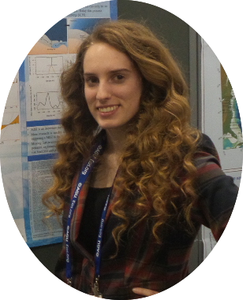

About me

- Currently, I am a scientific programmer for the network for Sustainable Climate Risk
Management at Pennsylvania State University.
- As of December 2015, I am a gradute of Penn State University with a Masters degree in
Geoscience. At PSU, I was supervised by Dr. Klaus Keller and coadvised by Dr. Chris Forest.
My thesis project involved analyzing the impacts of statistical calibration methods on the
upper tails of global sea-level projections.
- I have a Bachelor of Science in Geology from Bowling Green State University in Ohio
(received December 2013) and did undergraduate research in a Chemistry lab under Dr. Bob Midden.
- I enjoy being out in the field & working with climate models — check out my field work and
research. My past work with climate models deal with Bayesian statistics, projecting sea-level
rise, and projecting ice sheet melt. I have also recently become an avid and active Shiny and ArcGIS user.
- The research page is a nice place to see some of my work and codes.
- I enjoy traveling, anything volcano related, hiking, kayaking, photography, camping,
and recently cross stitching/quilting.
- Because I grew up in the Midwest and the snowbelt of Ohio,
I do enjoy a good blizzard and thunderstorm.